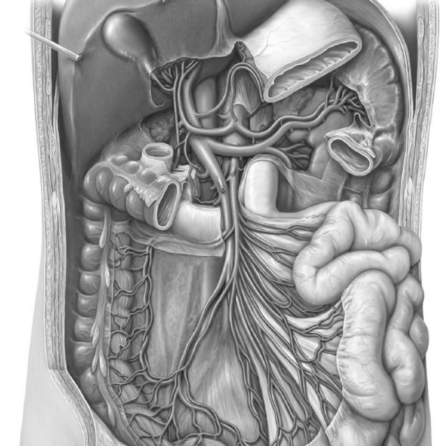
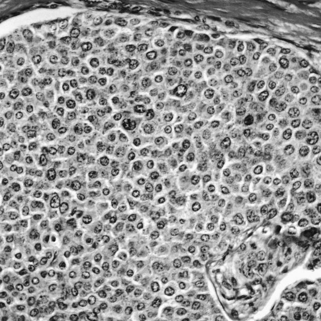
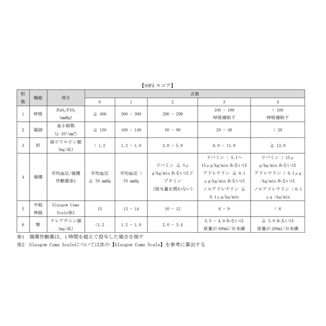

Clinical Toolbox
臨床工具箱
Established by Lin Shao-Chin
·
latest revision 2026.07.19
⌕
×

腹部
Emergency
急症
抗微
Antimicrobials
生物

癌症
Cancer
治療

計分
Scoring
工具
Abdominal Emergencies
腹部急症
← 返回主選單
感染
Infection
5 項
急性闌尾炎手術決策
Pathway
Appendicitis · Operative Decision
互動式流程圖：依複雜度、族群與膿瘍年齡分流，決定手術或非手術治療（WSES 2025 Jerusalem Guidelines · JAMA Surg 2026）
急性膽囊炎手術決策
Pathway
Acute Cholecystitis · Operative Decision
互動式流程圖：先分流合併之膽道／胰臟問題（含 TG18 急性膽管炎分級與引流時機），再依 TG18 膽囊炎嚴重度與手術風險，決定早期腹腔鏡手術、膽囊引流或保守治療（TG18 / WSES / AAST）
急性大腸憩室炎處置決策
Pathway
Acute Colonic Diverticulitis · Management Decision
互動式流程圖：依 WSES CT 分期（0／1A／1B／2A／2B／3／4）與病人條件、可否經皮引流、生理狀態，決定門診治療、抗生素、經皮引流或術式（吻合／Hartmann's／損害控制），並判定非手術治療後之大腸評估（WSES 2020）
急性胰臟炎處置決策
Pathway
Acute Pancreatitis · Management Decision
互動式流程圖：先依病因決定 ERCP 適應症與膽囊切除時機，再依 Revised Atlanta 嚴重度給監測、輸液、營養與抗生素策略，最後依壞死感染狀態與病程週數決定 step-up 引流／清創時機（WSES 2019 · Atlanta 2012）
壞死性軟組織感染處置決策
Pathway
Necrotizing Soft Tissue Infection · Management Decision
互動式流程圖：先以臨床、影像或床邊探查確立是否為壞死性，再依部位（腹壁／會陰富尼氏壞疽／四肢）與糞便污染決定清創範圍與糞便改道，最後依首次清創後再探查所見決定重複清創或轉入 NPWT／重建（WSES／SIS-E 2018）
阻塞
Obstruction
2 項
複雜性腹股溝疝氣手術決策
Pathway
Complicated Groin Hernia · Operative Decision
互動式流程圖：嵌頓／絞窄疝氣依 TAXIS 禁忌決定徒手復位或緊急手術，再依自發性復位、腸道存活與 CDC 傷口分類選擇術式與修補（WSES 2017 · HerniaSurge 2023）
腸阻塞處置決策
Pathway
Bowel Obstruction · Management Decision
互動式流程圖：先分流病因（沾黏、大腸／直腸癌、扭轉、ACPO、嵌頓疝氣、惡性腸阻塞）並判斷立即手術指標，再依各病因決定 NOM、內視鏡減壓、支架或術式（WSES 2017–2018 · ASCRS 2021 · MASCC 2021）
缺血
Ischemia
1 項
腸胃道缺血處置決策
Pathway
GI Ischemia · Management Decision
互動式流程圖：分辨急性腸繫膜缺血 (AMI)、大腸缺血 (CI) 與慢性腸繫膜缺血 (CMI)。AMI 依 CTA 四型（AMAE／AMAT／NOMI／MVT）與腹膜炎／血行動力學決定血管內重建、抗凝或損害控制手術；CI 先依分布（IRCI／全結腸／節段性）再依 ACG 嚴重度；CMI 依血管侵犯型態決定支架或開放式重建；術中腸段活性另段判定切除範圍（ESVS 2025 · WSES 2022 · ACG 2015）
穿孔
Perforation
1 項
腸胃道穿孔處置決策
Pathway
GI Perforation · Management Decision
互動式流程圖：依病因分流消化性潰瘍穿孔、憩室穿孔（WSES CT 分級）、醫源性大腸鏡穿孔與小腸穿孔，決定 NOM、引流或手術入路；PPU 再依術中穿孔大小與部位選擇修補術式（WSES 2017–2020）
出血
Hemorrhage
1 項
消化道出血處置決策
Pathway
GI Bleeding · Management Decision
互動式流程圖：先分上下消化道，上消化道依復甦後穩定度決定內視鏡時機、以 GBS 分流門診或住院，再依 Forrest 分類給止血方式，止血後另段判定再出血之 OTS clip／TAE／手術階梯；下消化道以 Oakland score 判定可否出院，嚴重出血走 CTA 與栓塞（ESGE 2026 · ACG 2021 · ACG 2023）
創傷
Trauma
1 項
腹部創傷處置決策
Pathway
Abdominal Trauma · Management Decision
互動式流程圖：先以血行動力學反應（不穩定／短暫反應 vs 穩定）與 E-FAST 或硬性指標決定是否立即剖腹與損害控制，可安全影像者再依 CT 之 AAST-OIS 2018 分級與血管損傷徵象，分別給脾、肝、腎、十二指腸-胰臟、腸道／腸繫膜、骨盆之非手術處置、血管栓塞或術式（WSES 2017–2020 · EAST 2010 · WTA 2018–2019 · 歐洲創傷大出血指引 2023）
腹腔高壓 / 開腹
Intra-abdominal Hypertension
1 項
腹腔內高壓／腔室症候群與開腹腹腔
Pathway
IAH / ACS & Open Abdomen · Management Decision
互動式流程圖：先以 IAP 分級與有無新發生器官功能障礙區分 IAH 與 ACS，再依 primary／secondary／recurrent 決定直接減壓或續行階梯式內科治療；腹部打開後另段以 Björck 修訂版分類（腹壁固定程度 × 污染狀態）分級，給暫時性關腹、再探查時機、營養與確定性關腹策略（WSACS 2013 · Björck 2016 · WSES 2018）
排程
Scheduling
1 項
緊急手術分級
Emergency Surgery Priority Levels
依台大醫院緊急手術作業規範查詢急刀級數（第一～五級）與合理等候時間；可用病況或術式關鍵字搜尋，一般外科列於首位，另附排程與滿線徵用原則
Scoring Tools
計分工具
← 返回主選單
共病評估
Comorbidity
1 項
CCI
Charlson Comorbidity Index
勾選共病項目計算指數，評估共病負荷與10年預估存活率，常用於研究校正與術前風險溝通
重症 / 多器官功能
Critical Care
4 項
WSACS 腹腔內高壓
IAH / ACS Grading
輸入 IAP 與 MAP 判定 IAH 分級（Grade I–IV）、是否成立 ACS 與 APP；含 primary／secondary／recurrent 分類對減壓時機的影響、WSACS 完整風險因子清單，以及兒童專屬閾值（兒科小組未採納成人分級，故兒童模式不輸出 Grade）
SOFA
Sequential Organ Failure Assessment
六大器官系統評分；疑似感染病人SOFA上升≥2分，符合Sepsis-3敗血症定義
APACHE II
Acute Physiology & Chronic Health Eval.
評估ICU入住24小時內疾病嚴重度，分數越高住院死亡風險越高
Vasopressor Calc
Vasoactive-Inotropic Score
計算多重升壓/強心藥物流速並加總VIS，數值越高代表循環支持需求越大
肝臟
Hepatology
2 項
Child-Pugh
Child-Pugh Score
評估肝硬化嚴重度分級A/B/C，C級病人手術風險顯著升高
MELD 3.0
Model for End-Stage Liver Disease 3.0
計算終末期肝病死亡風險，用於肝移植等候名單優先順序排序
一般手術風險
Surgical Risk
2 項
P-POSSUM
Portsmouth POSSUM
預測手術術後 30 天死亡率，常用於手術品質稽核與族群風險校正
SORT
Surgical Outcome Risk Tool
以 ASA、緊急度、手術別與嚴重度、癌症、年齡預估 30 天全因死亡率，用於術前風險溝通與稽核校正
闌尾炎
Appendicitis
3 項
Alvarado
Alvarado Score
評估急性闌尾炎機率，≥7分建議外科會診，敏感度高但特異度較AIR score低
AIR Score
Appendicitis Inflammatory Response
發炎反應導向之闌尾炎評分，特異度優於Alvarado，9–12分高度懷疑闌尾炎
pARC
Pediatric Appendicitis Risk Calculator
以連續機率量表評估5–18歲兒童闌尾炎風險，較PAS更能區分高低風險族群
消化性潰瘍穿孔
Peptic Ulcer Perforation
1 項
PULP Score
Peptic Ulcer Perforation Score
預測消化性潰瘍穿孔30天死亡率，表現優於傳統Boey score與ASA分級
消化道出血
GI Bleeding
5 項
Glasgow-Blatchford
Glasgow-Blatchford Score
上消化道出血內視鏡前風險分層，預測是否需住院介入或死亡；≤1 分可考慮門診處理，各分數中鑑別力最佳（AUROC 0.86）
Rockall Score
Rockall Score
上消化道出血死亡與再出血風險分層，分內視鏡前（0–7）與完整（0–11）兩段；休克分級由血壓心跳自動判定，避免常見的抄錯
AIMS65
AIMS65 Score
上消化道出血住院死亡率預測（白蛋白、INR、意識、收縮壓、年齡各 1 分）；預測死亡優於 GBS，≥2 分為高風險
Oakland Score
Oakland Score
下消化道出血安全出院評估（0–35 分，越低越安全）；≤8 分約 95% 機率可安全出院，血紅素權重最重
Forrest 分類
Forrest Classification
消化性潰瘍出血內視鏡分級（Ia–III）：查各級未治療再出血率、對應 Rockall SRH 分數與 ESGE 2026 建議之止血方式
胰臟炎
Pancreatitis
2 項
Modified Marshall Score
Organ Failure in Acute Pancreatitis
Revised Atlanta 2012 定義器官衰竭之評分：呼吸（PaO₂/FiO₂）、腎臟（Cr）、心血管（收縮壓）任一項 ≥2 分即為器官衰竭；持續 >48 小時為重度
CT Severity Index
Balthazar CTSI
急性胰臟炎影像嚴重度：Balthazar 分級（0–4）＋ 壞死範圍（0–6），總分 0–10 分為輕／中／重度；須以含對比劑 CT 判定壞死
膽道
Biliary
1 項
膽囊切除困難度
Parkland + Nassar Grading
術中評估：Parkland 評膽囊發炎嚴重度、Nassar 由膽囊／膽囊管蒂／沾黏三面向取最差者評手術困難度，對應轉開腹與膽道損傷風險
壞死性軟組織感染
Necrotizing Soft Tissue Infection
2 項
LRINEC
Laboratory Risk Indicator for Necrotizing Fasciitis
以 CRP／WBC／Hb／Na／Cr／Glucose 六項常規檢驗（0–13 分）提高壞死性感染的警覺；敏感度僅 68%，
不可用於排除診斷
FGSI / UFGSI
Fournier's Gangrene Severity Index · Uludağ
富尼氏壞疽預後分層：九項生理參數加總（FGSI），再加侵犯範圍與年齡（UFGSI）；用於加護病房收治判斷，非手術判準
腹膜炎
Peritonitis
2 項
MPI
Mannheim Peritonitis Index
評估腹膜炎嚴重度並預測死亡率，分數越高（0–47分）預後越差
WSES Sepsis Score
WSES Sepsis Severity Score
評估複雜性腹內感染之敗血症嚴重度，用於預測死亡率與器官衰竭風險
腸阻塞
Bowel Obstruction
3 項
Wassmer Score
Clinical Severity Score for SBO
預測黏連性小腸阻塞是否需手術切除腸段，≥4分列為高風險
Angers CT Score
Angers CT Score
依CT影像特徵預測黏連性小腸阻塞保守治療失敗風險，≥5分為高風險
Millet Score
Combined CT Findings for Strangulation
結合3項CT徵象評估小腸阻塞絞窄風險，三項皆無時可高信心排除絞窄
腸繫膜缺血
Mesenteric Ischemia
2 項
RADIAL Score
RADIAL Score for AMI Mortality
預測急性腸繫膜缺血住院死亡率，分數越高（0–13分）死亡率越高
AMI Diagnostic Score
Novel Scoring System for AMI Diagnosis
以常規血液檢驗（WBC、RDW、MPV、D-dimer）輔助急診鑑別急性腸繫膜缺血